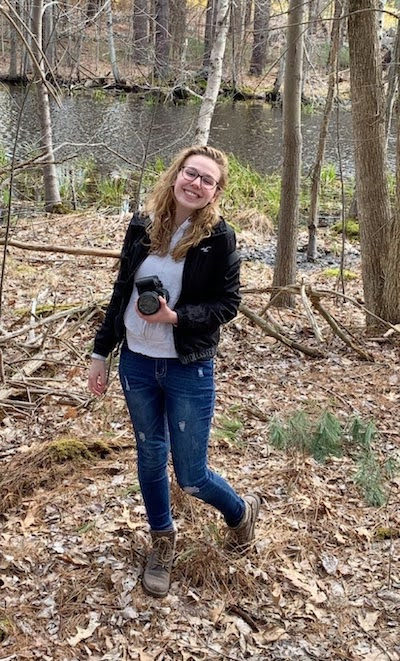

Hi there! My name is Hannah, and I am from Littleton Massachusetts - a small, rural town north west of Boston. I’m currently a Senior at Wheaton College and taking Introduction to Digital Fabrication this Fall 2021. If you want to learn a little bit more about me, you’re in the right place!
I grew up surrounded by technology. My dad has job-hopped between various network and web support companies,and my mom works as my town's public schools technology coordinator. Mrs.Lord herself has curated incredible makerspaces stocked with 3D printers and green screens to give elementary students a glimpse of how creativity paired with technology can lead to some pretty awesome creations.
My computer classes in Middle School were always my favorite - typing tests, Hour of Code and learning Abode Photoshop were what excited
my eleven year old brain! Now in college, I am further pursuing my knack for problem solving through my Computer Science studies. I spent last Summer researching digital elevation files and rendering them with C++ graphics libraries, and will be continuing this research this fall.

But I also had another passion outside of the classroom; making movies.
Playdates with me entailed storyboarding, making props, and filming with my bright blue digital camera sometimes for hours on end. I’d spend hours editing my poorly lit, low budget videos in iMovie, pretending I was vying for an Oscar.
Premiere nights for my films were
"highly-anticipated" by my parents, and were just as extravagant as they sound. The feature presentation, though, was not quite Oscar worthy.
Here are Wheaton, I have been able to pursue both my creative and technical sides by double majoring in Computer Science and Film
and New Media studies (check out my Vimeo channel!). But very few individual classes have allowed me to apply both aspects of my brain simultaneously. That was until I stumbled upon Introduction to Digital Fabrication.
In this course, I’m excited to apply both of my passions and see what I am able to create!
I'm also an avid tea drinker, a horror movie buff, a piano player, a tree hugger, and a dog lover!